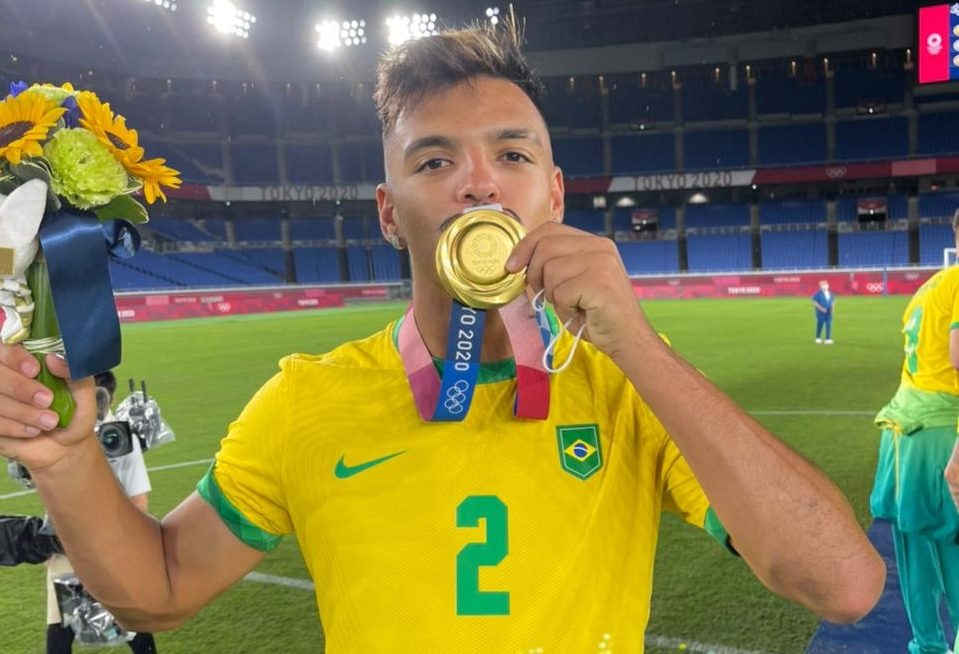

medalhas do futebol olimpico
Futebol Masculino
Brasil: 7 medalhas (2 ouros, 3 pratas, 2 bronzes)
Alemanha: 5 medalhas (1 ouro, 2 pratas, 2 bronzes)
Argentina: 4 medalhas (2 ouros, 1 prata, 1 bronze)
Uruguai: 2 medalhas (2 ouros)
Reino Unido: 1 medalha (1 ouro)
Futebol Feminino
Estados Unidos: 7 medalhas (4 ouros, 1 prata, 2 bronzes)
Alemanha: 4 medalhas (1 ouro, 2 pratas, 1 bronze)
Noruega: 2 medalhas (1 ouro, 1 bronze)
Canadá: 2 medalhas (1 ouro, 1 bronze)
Suécia: 3 medalhas (1 prata, 2 bronzes)